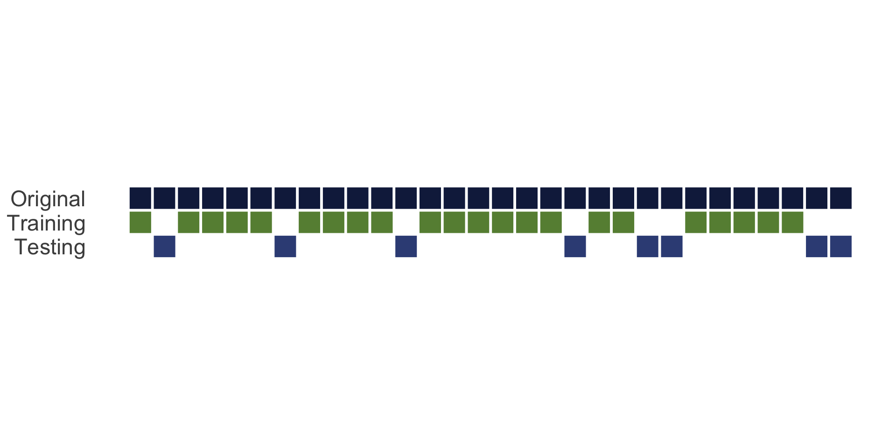
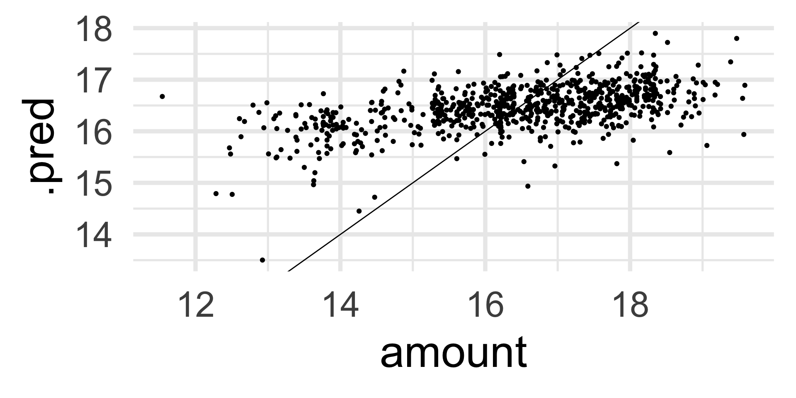

Modeling with Text
OCRUG Hackathon 2023
Schedule
09:30 AM – 10:15 AM: Text Mining10:15 AM - 10:30 AM: Break10:30 AM - 11:15 AM: Modeling with Text
Supervised Modeling using text
- Text like this can be used for supervised or predictive modeling
- We can build both regression and classification models with text data
- We can use the ways language exhibits organization to create features for modeling


Modeling Packages
tidymodels is a collection of packages for modeling and machine learning using tidyverse principles
textrecipes extends the recipes package to handle text preprocessing
Problem statement
How much money were the grant awarded?
We will try to answer this question based on the text field alone
We will ignore that there is a time-component to the data for simplicity
This is a regression task
Data splitting
The testing set is a precious resource which can be used only once
Data splitting
Using the {yardstick} package allows us to split the data correctly
What mistake have we made already?
We did EDA on the whole dataset
By not restricting to training set -> data leakage
Data preprocessing
And feature engineering
Flexible and reproducible preprocessing framework

How to build a recipe
- Start the
recipe() - Define the variables involved
- Describe preprocessing step-by-step
Building base recipe
Start with recipe() to define outcome and predictors
recipes - tokenization
"ensuring" "healthy" "lives" "and" "promoting" "well" "being ...
"atmospheric" "particles" "also" "often" "referred" "as" "ae ...
"new" "gene" "regulation" "is" "a" "key" "source" "of" "new" ...
"most" "biological" "processes" "in" "the" "human" "body" "a ...
"background" "and" "rationale" "ostracism" "the" "painful" " ...
"the" "use" "of" "bacterial" "viruses" "for" "the" "treatmen ...recipes - stop words
"ensuring" "healthy" "lives" "promoting" "well" "global" "pr ...
"atmospheric" "particles" "also" "often" "referred" "aerosol ...
"new" "gene" "regulation" "key" "source" "new" "traits" "inn ...
"biological" "processes" "human" "body" "driven" "ability" " ...
"background" "rationale" "ostracism" "painful" "experience" ...
"use" "bacterial" "viruses" "treatment" "infectious" "diseas ...recipes - stemming
"ensur" "healthi" "live" "promot" "well" "global" "prioriti" ...
"atmospher" "particl" "also" "often" "refer" "aerosol" "atmo ...
"new" "gene" "regul" "kei" "sourc" "new" "trait" "innov" "bi ...
"biolog" "process" "human" "bodi" "driven" "abil" "protein" ...
"background" "rational" "ostrac" "pain" "experi" "exclud" "i ...
"us" "bacteri" "virus" "treatment" "infecti" "diseas" "phage ...recipes - Removing low frequency words
"well" "global" "develop" "goal" "behavior" "aim" "well" "ap ...
"also" "scienc" "context" "organ" "associ" "regul" "state" " ...
"new" "gene" "regul" "kei" "new" "gene" "regul" "studi" "exp ...
"process" "human" "protein" "interact" "protein" "protein" " ...
"experi" "effect" "life" "perform" "research" "studi" "exper ...
"us" "treatment" "diseas" "propos" "howev" "import" "knowled ...recipes - Getting counts!
1 2 3 activ adapt addit address advanc affect ag aim
[1,] 0 0 0 1 0 0 0 0 0 0 2
[2,] 0 0 0 2 1 2 1 0 1 0 1
[3,] 0 0 0 3 4 3 0 0 0 0 3
[4,] 0 0 0 0 0 0 0 0 0 0 0recipes - Indicators
1 2 3 activ adapt addit address advanc affect ag aim
[1,] 0 0 0 1 0 0 0 0 0 0 1
[2,] 0 0 0 1 1 1 1 0 1 0 1
[3,] 0 0 0 1 1 1 0 0 0 0 1
[4,] 0 0 0 0 0 0 0 0 0 0 0recipes - TF-IDF
1 2 3 activ adapt addit address advanc affect ag aim
[1,] 0 0 0 0.012 0.000 0.000 0.000 0 0.000 0 0.019
[2,] 0 0 0 0.020 0.017 0.027 0.012 0 0.015 0 0.008
[3,] 0 0 0 0.028 0.061 0.037 0.000 0 0.000 0 0.022
[4,] 0 0 0 0.000 0.000 0.000 0.000 0 0.000 0 0.000recipes - TF-IDF + n-grams
1_2 19_pandem 6_month achiev_goal address_question aim_1
[1,] 0 0 0 0 0 0
[2,] 0 0 0 0 0 0
[3,] 0 0 0 0 0 0
[4,] 0 0 0 0 0 0recipes - Hashing + n-grams
001 002 003 004 005 006 007 008 009 010 011 012 013 014
[1,] 0 0 1 -1 2 0 0 0 0 0 -1 2 -2 -1
[2,] -1 -1 0 0 -2 -2 0 -1 0 -2 -1 1 1 -1
[3,] 1 3 -1 1 2 -1 1 0 7 0 -2 -2 -1 0
[4,] 0 1 0 0 -2 0 -1 -1 1 0 1 0 0 1Selecting a recipe
I want to start with the Tf-IDF version
Selecting a recipe
── Recipe ────────────────────────────────────────────────────── Inputs Number of variables by roleoutcome: 1
predictor: 1── Operations • Tokenization for: abstract• Stop word removal for: abstract• Stemming for: abstract• Text filtering for: abstract• Term frequency-inverse document frequency with: abstractWhat kind of models work well for text?
Remember that text data is sparse! 😮
- Regularized linear models (glmnet)
- Support vector machines
- naive Bayes
- Tree-based models like random forest?
To specify a model in tidymodels
Pick a model
Set the mode (if needed)
Set the engine
All available models are listed at https://tidymodels.org/find/parsnip

set_mode()
Once you have selected a model type, you can select the mode
Decision Tree Model Specification (regression)
Computational engine: rpart set_engine()
The same model can be implemented by multiple computational engines
What makes a model?
Parameters and… hyperparameters?
Some model parameters can be learned from data during fitting/training
Some CANNOT 😱
These are hyperparameters of a model, and we estimate them by training lots of models with different hyperparameters and comparing them
Grid of values
Collection of 1 parameters for tuning
identifier type object
penalty penalty nparam[+]Grid of values
We can select a high number of penalty values at the same time because {glmnet} fits them all at the same time
Spend your data budget
We can do 5-fold cross-validation


Spend your data wisely to create simulated validation sets
Create a workflow
When we create a workflow, we combine the recipe with the model specification to be able to fit them as once
Create a workflow
══ Workflow ══════════════════════════════════════════════════
Preprocessor: Recipe
Model: linear_reg()
── Preprocessor ──────────────────────────────────────────────
5 Recipe Steps
• step_tokenize()
• step_stopwords()
• step_stem()
• step_tokenfilter()
• step_tfidf()
── Model ─────────────────────────────────────────────────────
Linear Regression Model Specification (regression)
Main Arguments:
penalty = tune()
mixture = 1
Computational engine: glmnet Time to tune! ⚡
Look at the tuning results 👀
The result comes as a tibble, expanded from grants_folds
# Tuning results
# 5-fold cross-validation
# A tibble: 5 × 4
splits id .metrics .notes
<list> <chr> <list> <list>
1 <split [600/150]> Fold1 <tibble [100 × 5]> <tibble [1 × 3]>
2 <split [600/150]> Fold2 <tibble [100 × 5]> <tibble [1 × 3]>
3 <split [600/150]> Fold3 <tibble [100 × 5]> <tibble [1 × 3]>
4 <split [600/150]> Fold4 <tibble [100 × 5]> <tibble [1 × 3]>
5 <split [600/150]> Fold5 <tibble [100 × 5]> <tibble [1 × 3]>
There were issues with some computations:
- Warning(s) x5: A correlation computation is required, but `estim...
Run `show_notes(.Last.tune.result)` for more information.Look at the tuning results 👀
There is a whole host of helper functions to extract the information that is contained
# A tibble: 100 × 7
penalty .metric .estimator mean n std_err .config
<dbl> <chr> <chr> <dbl> <int> <dbl> <chr>
1 1 e-10 rmse standard 1.83 5 0.0685 Preproces…
2 1 e-10 rsq standard 0.0511 5 0.0194 Preproces…
3 1.60e-10 rmse standard 1.83 5 0.0685 Preproces…
4 1.60e-10 rsq standard 0.0511 5 0.0194 Preproces…
5 2.56e-10 rmse standard 1.83 5 0.0685 Preproces…
6 2.56e-10 rsq standard 0.0511 5 0.0194 Preproces…
7 4.09e-10 rmse standard 1.83 5 0.0685 Preproces…
8 4.09e-10 rsq standard 0.0511 5 0.0194 Preproces…
9 6.55e-10 rmse standard 1.83 5 0.0685 Preproces…
10 6.55e-10 rsq standard 0.0511 5 0.0194 Preproces…
# ℹ 90 more rowsLook at the tuning results 👀
There is even an autoplot() method
Look at the tuning results 👀
Once we see that there is a “best” model, we colect the best combination of hyper parameters
Update the workflow
We can update our workflow with the best performing hyperparameters.
This workflow is ready to go! It can now be applied to new data.
Update the workflow
══ Workflow ══════════════════════════════════════════════════
Preprocessor: Recipe
Model: linear_reg()
── Preprocessor ──────────────────────────────────────────────
5 Recipe Steps
• step_tokenize()
• step_stopwords()
• step_stem()
• step_tokenfilter()
• step_tfidf()
── Model ─────────────────────────────────────────────────────
Linear Regression Model Specification (regression)
Main Arguments:
penalty = 0.0954095476349996
mixture = 1
Computational engine: glmnet fit the workflow
We can update our workflow with the best performing hyperparameters.
══ Workflow [trained] ════════════════════════════════════════
Preprocessor: Recipe
Model: linear_reg()
── Preprocessor ──────────────────────────────────────────────
5 Recipe Steps
• step_tokenize()
• step_stopwords()
• step_stem()
• step_tokenfilter()
• step_tfidf()
── Model ─────────────────────────────────────────────────────
Call: glmnet::glmnet(x = maybe_matrix(x), y = y, family = "gaussian", alpha = ~1)
Df %Dev Lambda
1 0 0.00 0.296300
2 3 1.08 0.270000
3 5 2.89 0.246000
4 6 4.79 0.224200
5 8 6.51 0.204200
6 10 8.25 0.186100
7 15 9.99 0.169600
8 15 11.83 0.154500
9 17 13.44 0.140800
10 24 15.12 0.128300
11 33 16.95 0.116900
12 41 19.16 0.106500
13 43 21.21 0.097030
14 50 23.07 0.088410
15 57 25.00 0.080560
16 69 26.94 0.073400
17 73 28.74 0.066880
18 81 30.48 0.060940
19 84 32.05 0.055520
20 89 33.43 0.050590
21 93 34.69 0.046100
22 100 35.86 0.042000
23 111 37.01 0.038270
24 120 38.11 0.034870
25 131 39.14 0.031770
26 138 40.12 0.028950
27 146 41.04 0.026380
28 153 41.84 0.024040
29 154 42.54 0.021900
30 159 43.14 0.019950
31 160 43.67 0.018180
32 165 44.13 0.016570
33 172 44.57 0.015090
34 177 44.94 0.013750
35 181 45.27 0.012530
36 181 45.55 0.011420
37 185 45.78 0.010400
38 193 45.99 0.009480
39 198 46.17 0.008638
40 200 46.33 0.007870
41 206 46.47 0.007171
42 209 46.60 0.006534
43 210 46.70 0.005954
44 212 46.79 0.005425
45 213 46.87 0.004943
46 214 46.94 0.004504
...
and 30 more lines.Assessing performance
We are not doing great
Assessing performance

Final fit
We will now use last_fit() to fit our model one last time on our training data and evaluate it on our testing data.
Notice that this is the first and only time we have used our testing data
Evaluate on the test data
Evaluate on the test data
Evaluate on the test data

Another Book